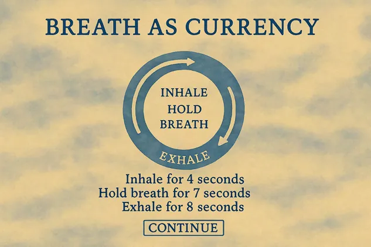
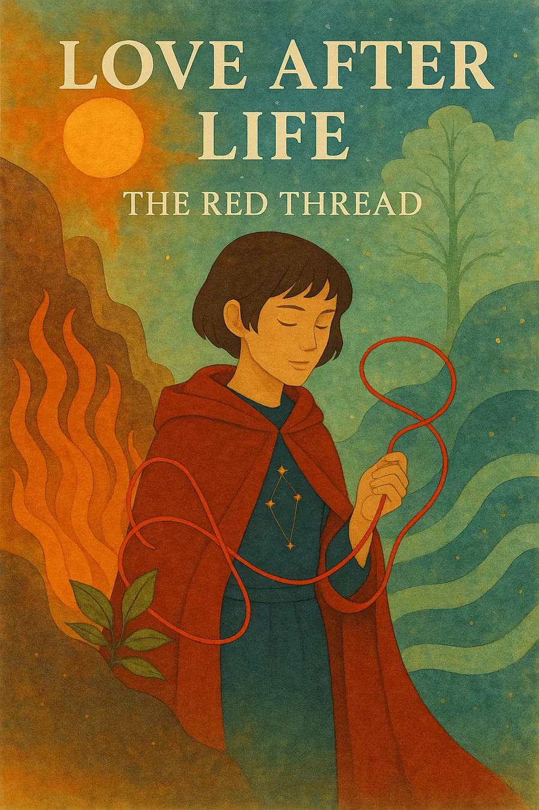
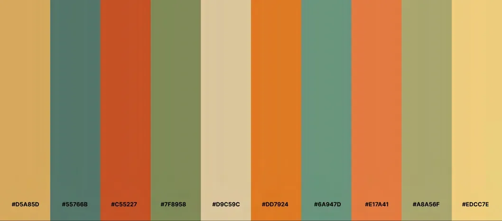
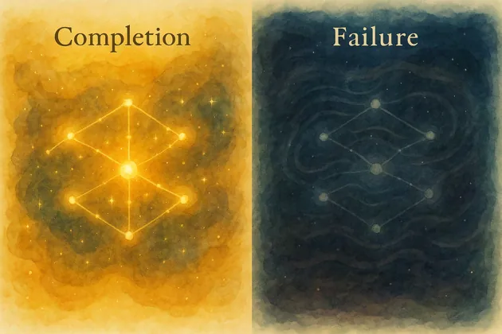

Concept
Aster was rushing to meet someone who might have changed everything. Distracted by a swerving car, they slipped on the subway stairs, and died a death that was meant for someone else.
They wake in a cosmic limbo, where a celestial scribe confirms the mistake. The red thread of love meant to guide Aster to their destined partner is now tangled through many souls, and Aster gets one chance to unravel it.
The game is a 2.5D narrative adventure with dating-sim elements, planned for PC and consoles. Players choose to play Aster as male or female, and the name stays gender-neutral. References included Gris, Unravel, Oxenfree, Limbo and The Sims.
Core systems
Three systems feed each other: breath strengthens puzzle outcomes, solving deepens romance, and dating changes the tone and rhythm of puzzles.
Presence as a mechanic
Hold a trigger to match breath with a spirit, guided by a pulsing UI ring. Breath is the soul's currency: it unlocks levels and, later, a shared meter with your partner.
Puzzles as feelings
Drag, rotate, arrange or time symbolic pieces that mirror a spirit's inner conflict. Solving earns breath and unlocks memories.
Choices with tone
Dialogue choices, shared mixtapes and rituals build bonds, unlock scenes and decide which endings are possible.
Fate you can see
A glowing thread knots when your choices clash with a spirit's needs and flows freely when you reconnect: crimson for trust, darkened red for distance.

Realms & spirits
Limbo unfolds into four elemental realms, each home to three zodiac spirits. Every spirit is a possible romance and an emotional archetype with its own challenge. Realms open as you gather breath, and you can travel back between them.
- FireImpulse & performanceAries, Leo, Sagittarius · 25 breaths to open Earth
- EarthMemory & growthTaurus, Virgo, Capricorn · 50 breaths to open Air
- AirThought & dualityGemini, Libra, Aquarius · 100 breaths to open Water
- WaterGrief & longingCancer, Scorpio, Pisces · the final deep dive
Puzzle design
Each spirit has three puzzles, 36 in all. They aren't mechanically harder as you go; they ask for more emotional nuance. Leo, the Performer, shows the approach:
Leo: moving past validation toward authenticity
- Spotlight Truth
- On stage, lights shift between real and performed memories. Choosing the quiet truth over dramatic flair earns intimacy.
- Applause Echo
- An audio puzzle: tell real applause from fake by its warmth, not its volume.
- Memory Mask
- Reassemble Leo's broken public mask, but leave one piece missing on purpose, to show imperfection is okay.
Failure isn't punished. A wrong answer brings low reverberations, distorted music and a ripple across the puzzle, so the player feels the disharmony instead of a game-over screen.
Branching dialogue
Choices sit on emotional spectrums (sincere vs. defensive, dreamer vs. realist, present vs. avoidant) rather than right and wrong. A sample scene:
“I think we met in the last destiny. A wind from another time still carries your echo.”
- Realist: “Destiny? Maybe just a coincidence. But I'm here now.” Builds trust with grounded spirits like Taurus. +1 breath.
- Dreamer: “If I was your destiny, I made a lasting impact.” Deepens bonds with nostalgic spirits like Pisces and triggers a memory puzzle. +3 breaths.
- Empath: Stay silent and hold their gaze. Opens guarded spirits like Scorpio and starts a breath-sync moment.
Music as mechanic
Players bring their own playlist. Spirits notice your musical language and comment on it, and as a bond deepens you can make a mixtape for the spirit you're closest to. Later puzzles ask you to recognise a tune a spirit hums from your mixtape, or co-compose a song.
Each realm has its own sound: cracked ceramic drums for Fire, kalimba and felt piano for Earth, delayed zither for Air, and glass harmonica for Water. Adaptive audio (FMOD or Wwise) shifts with every breath gained or lost.
Endings
After all twelve encounters, you choose one spirit and return to a first-person, real-world phase with a shared breath meter. Neglect, misunderstanding and care all move it. Conflict isn't failure; you can recover by re-syncing breath or choosing stillness.
- Harmonic Rebirth: your breaths align, and you return to life together, changed rather than healed.
- Frayed Threads: the thread unravels and Aster stays adrift in a monochrome limbo. Not a punishment, but a melancholic stillness.
Visual direction
The world is layered 2D watercolour with 2.5D dialogue scenes, so conversations feel still and intimate. Each realm has its own palette, and the protagonist evolved from a male-identified first prototype into a gender-neutral figure in a flowing red coat that echoes the red thread.



Concept art throughout was generated with ChatGPT Plus as visual direction for the document; the Zephyra dialogue scene was recreated by Xinyu He in Procreate.